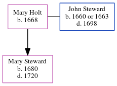

Mary Steward (née Holt) 1668 -
[ Home ] | [ Calendar ] | [ Surnames Index ] | [ Family History ]Mary Holt was born in 1668 and had 1 child with John Steward: Mary.
Children
- Mary was born in 1680
Family Tree
Generated by ged2site. Last updated on Jun 24, 2024